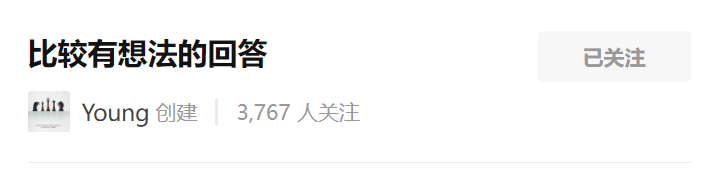

最新专题
圆桌讨论
热门收藏夹
-
俄罗斯为什么宁愿死磕欧洲也不经营远东地区？
林有朴樕：远东太冷了。 我有个同事以前在哈萨克斯坦的一家中··· 1,821 赞同 · 141评论 -
俄罗斯为什么宁愿死磕欧洲也不经营远东地区？
Mr Anderson：木有人口，这是最大的问题。 俄罗斯要是有10··· 1,821 赞同 · 141评论 - 已收藏 2,100 条内容 >
-
HTML5期末大作业：山河旅行社网站设计——山河旅行社网站(···
web前端领域-网页设计：HTML5期末大作业：山河旅行社网站··· 1 赞同 · 0评论 -
25000字玩转 Pandas， 这一篇太给力了！
Python与数据挖掘 Ma Sizhou，原文： 系统性的学会 P··· 286 赞同 · 2评论 - 已收藏 3,944 条内容 >

-
为什么越来越多的人预测房价要下跌？
宝宝王：最近在看威科夫交易法，挺有道理的。 任何市场上都有··· 588 赞同 · 135评论 -
怎么看待《中县干部》这本书？
最炫民族风：“人不能对自己掌握之外的人或事抱有任何幻想。··· 4,122 赞同 · 139评论 - 已收藏 6,954 条内容 >

-
为什么知乎上那么多人黑《钢铁是怎样炼成的》？
陈斌：中国和俄国的黑《钢铁是怎样炼成的》的黑法其实是。··· 213 赞同 · 20评论 -
水浒 108 将中，哪个是废人？
灯火：看到有写铁扇子宋清是废人的，抖个机灵。宋清的技能是··· 318 赞同 · 62评论 - 已收藏 1,334 条内容 >